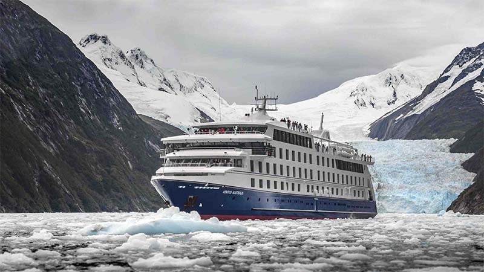

Day 1: Europe / America
With the south cross as a guide you fly over the Atlantic Ocean to have an unforgettable experience in Argentina with its incredible scenery and wild nature.

With the south cross as a guide you fly over the Atlantic Ocean to have an unforgettable experience in Argentina with its incredible scenery and wild nature.
The city tour lets you discover the great city located on the Rio de La Plata. Buenos Aires captures her visitors at first sight, specially its numerous cultural options.
Near the city, you can find different lifestyles. On a special country day, you can be indulged with famous "Asado Criollo" and a typical horse show as a part of the "Fiesta Gaucha".
In Iguazu, nature offers you an unforgettable sight. 900 meters of bridges over Rio Iguazu, and the breathtaking Iguazú falls will astonish you.
On the "Jungle Train" you begin a ride to the heart of the Iguazu falls. A walk through the passages allow you to walk among the waterfalls till you reach the "Garganta del Diablo".
Enjoy the Iguazú falls from the Brazilian side along 900 meters of bridges.
The Glacier air touches your face softly as soon as you get off the plane bringing you from Iguazú. You arrive in "El Calafate" city, the access to the Perito Moreno Glacier.
You reach the Glacier walking along the bridges that let you contemplate the magnificent view of the glacier. It is a soundless white river, with blue tones that wait patiently to fall into the "Argentino Lake".
This region offers numberless options to enjoy The Glaciares National Park.
A very short flight from El Calafate to Ushuaia allows you to reach the most southern place in the world: Ushuaia, a treat to enjoy throughtout the year.
The excursion to Fagnano Lake on a special 4X4 off road trucks, from Ushuaia city traveling across the Southern Andes, to Garibaldi Lake to taste some delicious grilled beef.
There are several alternatives to enjoy your free day: the amazing excursion to the Tierra del Fuego National Park, or the visit to the uninhabited Gable Island, or - only in winter - a sledge tour pulled by special dogs (huskies).
The Captain and crew give a welcome cocktail reception on board. Immediately afterwards, the ship departs for "the uttermost part of the earth." This excursion will take us through Beagle Channel and the Strait of Magellan to explore one of the most captivating wilderness regions in the world: Southern Patagonia, and Tierra del Fuego.
You sail through Beagle and Murray channels to reach and disembark in Cape Horn National Park (weather permitting), on Hornos Island, high rocky promontory. This mythical place is known as the "End of the Earth".
In the afternoon, you view the awe-inspiring Gunther Plüschow Glacier, named after the region´s pioneering German aviator. Then you sail to Chico Sound, where you disembark in Zodiacs to observe the majestic Piloto and Nena glaciers.
Early in the morning, you go ashore on Magdalena Island, the home of an immense colony of Magellan Penguins that you can watch during our walk to a lighthouse. After our visit, you sail to Punta Arenas, disembarking at 11:30 a.m. Transfer in a private car to Rio Gallegos to take the flight. The plane brings you back to Buenos Aires.
You can have a different day taking an excursion to Delta, in Tigre, sailing on a special boat through the channels among the islands. Our package includes a Dinner Tango´s Show at Esquina Carlos Gardel.
Along your trip you have visited the most stunning region of this planet. Ezeiza International Airport is your last stop before boarding your international flight. End of our services.